Using App::financeta
Starting the Application
We hope that you have successfully installed the application as outlined here. If you have installed it from CPAN, you need to start the application like this:
$ financeta
If you have installed the software from Github, you are running it in developer mode and you should be running it like this:
$ perl -Mblib ./bin/financeta
Please refer to the install page for more details on installing the application from Github and CPAN.
On Linux and other Unix variants, you need X-server running to view the GUI. On Mac OS X, if you have installed Gnuplot, you will already have X-server installed and the application should automatically start it up.
Commandline options
The following commandline options are supported:
--debugThis turns on debugging on the console and can be used to send us any logs of error messages or warnings if the application is not doing what you think it should be doing.
Selecting a Security
When we refer to the word security, we mean a company stock. However, as time progresses and if data is freely available, we will be adding options and futures to the mix as well. Hence security is a term that groups all of these under one.
Using the menu option 'Security' followed by 'New' as shown in the image below, start the 'Security Wizard' dialog. Enter a valid stock symbol such as 'MSFT' in the 'Enter Security Symbol' text box, select the start and end dates for which you want data for (by default this is set to one year back from today) and hit the 'OK' button.
You will see a new tab opens with the name of the symbol you entered, which is 'MSFT' in this case and all the stock data listed in tabular form. You will also see a plot drawn in Gnuplot in a separate window that is started up and controlled by the application.
The data downloaded is saved in $TMPDIR on Linux or BSD or Mac OSX and $TEMP or $TMP on Windows. If $TMPDIR is not
set, then /tmp/ is used. The data is stored in a CSV file and if the same date
range is used by the user, the data is downloaded only once. If the user wants
to force the download of the data, they can select the 'Force download' option
in the 'Security Wizard'.
The steps are outlined as follows:
- Select 'New' from the 'Security' menu option
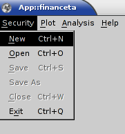
- Enter a valid stock symbol and date range in the 'Security Wizard' such as 'MSFT'
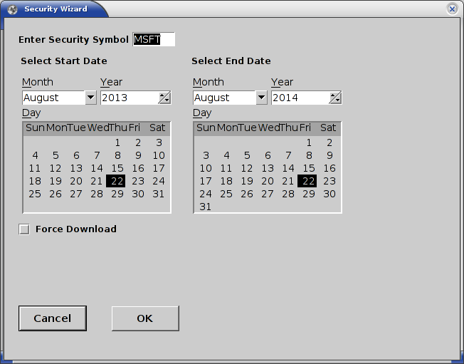
- View the retrieved data in a tab titled 'MSFT' or the symbol you have chosen
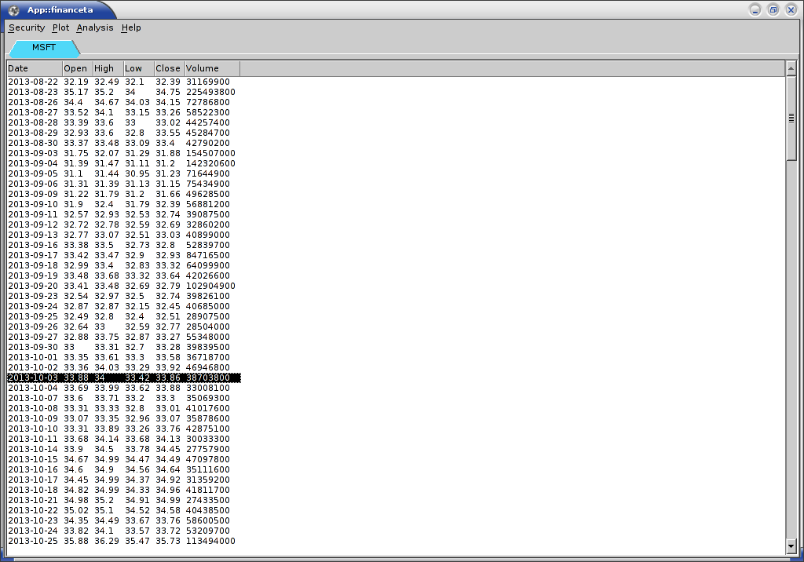
- View the open-high-low-close (OHLC) bar plot in Gnuplot that has been started by App::financeta
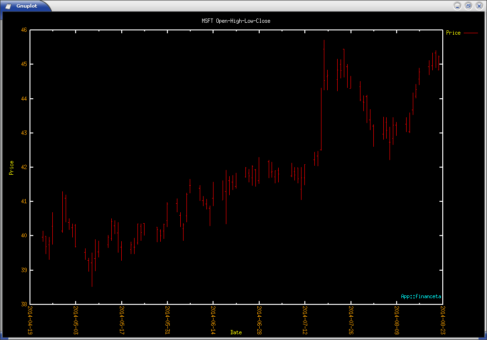
- More securities can be added in the same way by following the above steps.
Let us look at the various plot types that the application provides.
Selecting a Plot
Various types of plots are provided to the user as part of this application. Using the 'Plot' menu option, the user can select any type of plot and the Gnuplot window will automatically display that plot type.
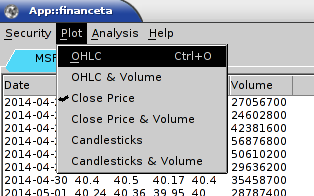
The current supported plot types are as follows:
- OHLC: This is the default plot type. It displays the Open-High-Low-Close data with the price being on the Y-axis and the date on the X-axis. This is a standard finance plot used in the industry.
- OHLC & Volume: This plot type shows two plots in one window. The top plot is the OHLC plot as described above, and the bottom plot shows Volume in units of 1 million stocks on the Y-axis. There are some Volume based indicators where this kind of plot can be very useful.
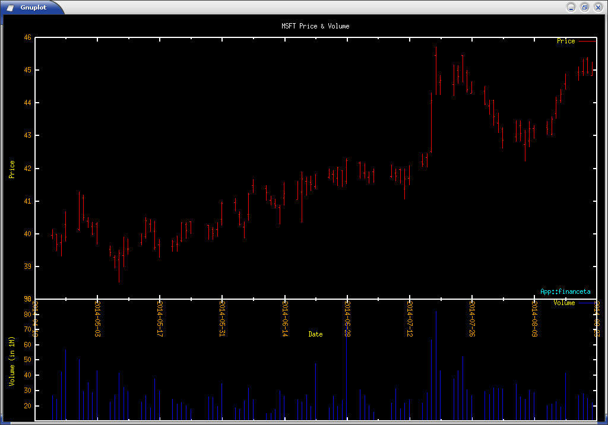
- Close Price: This plot type plots the Close price of the stock as a line graph with the Y-axis being the price and the X-axis being the date. This is useful when you want to use indicators that prefer using a single price stream such as Moving Average indicators.
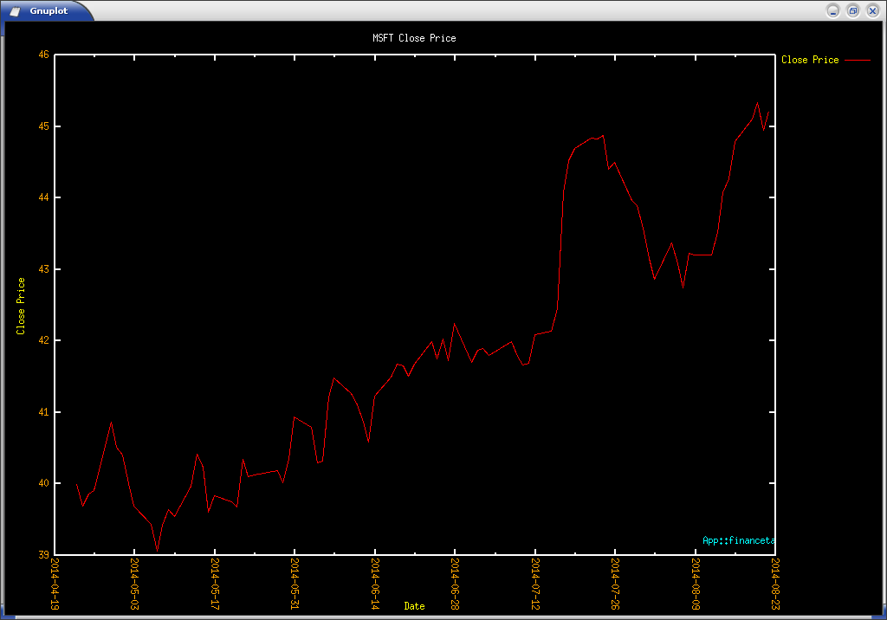
- Close Price & Volume: This plot type is similar to the Close price plot type above and also has a sub-plot of Volume in units of 1 million stocks on the Y-axis.
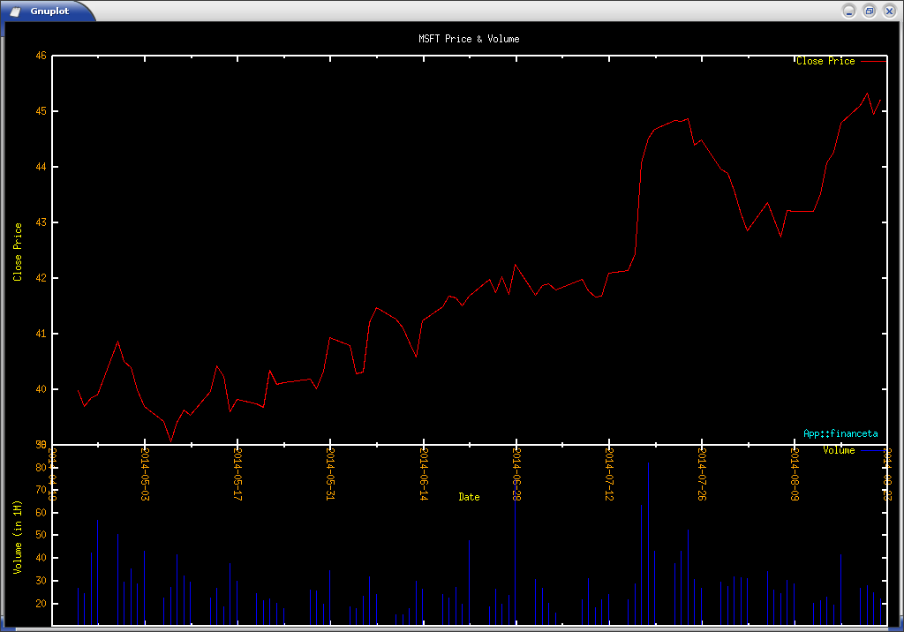
- Candlesticks: Some researchers like to use Candlestick charts to understand how stock trades move, and for them we have the candlestick plot feature. There are about 61 candlestick indicators that ta-lib supports and hence this plot is essential to App::financeta.
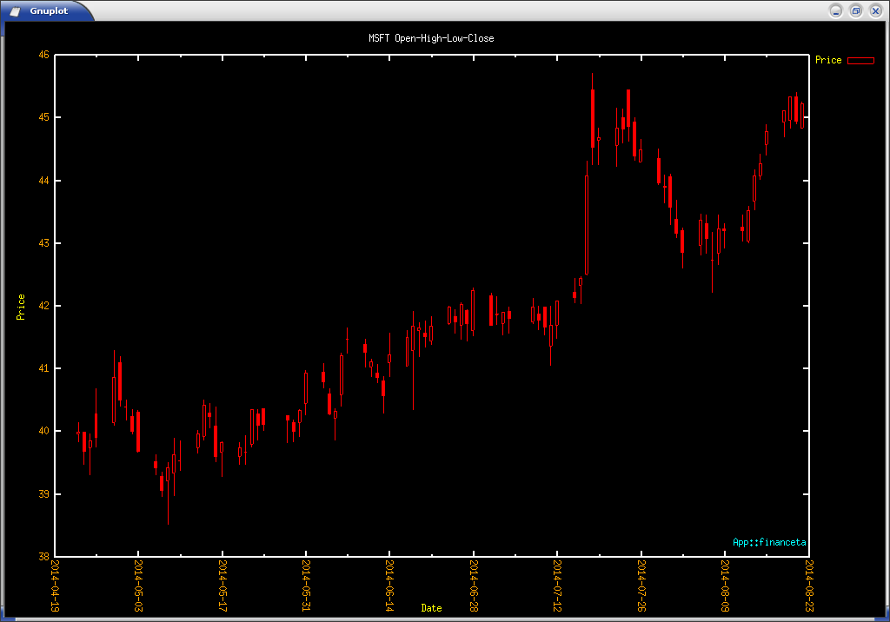
- Candlesticks & Volume: This plot is useful if the user wants to do analysis with both Candlesticks and Volume indicators. The Volume is plotted in units of 1 million stocks as a sub-plot. 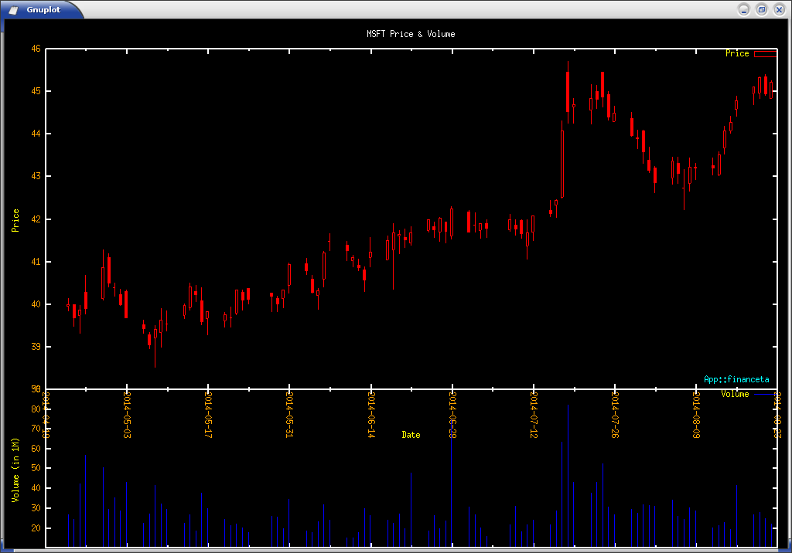
Now it is time to select an indicator to add to the plot.
Selecting an Indicator
To perform analysis on the security selected above, we need to try out some indicators. Various types of indicators are available to the user and details about each of them are provided in the chapter titled Indicators. We have counted about 132 indicators that we provide as part of App::financeta that are available from ta-lib. However, once we are satisfied with the documentation of all the indicators available, and the application has all the expected features outlined in the Introduction, we will add our own custom indicators as well.
Let us try to do the simplest indicator - Simple Moving Average. This is a form of Overlap indicator, since it overlaps with the actual price data.
The steps to add this indicator are below: - Load the data for the security 'MSFT' or your favorite stock as shown above. The OHLC or Close Price plots should be selected depending on your prefernce.
- Select 'Add Indicator' from the 'Analysis' menu to start the 'Technical Analysis Indicator Wizard'.
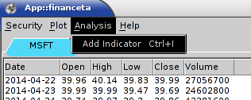
Select 'Overlap Studies' in the Group list, select 'Simple Moving Average' in the Function list and set the period window parameter to 21 in the text box as shown here and hit the OK button. 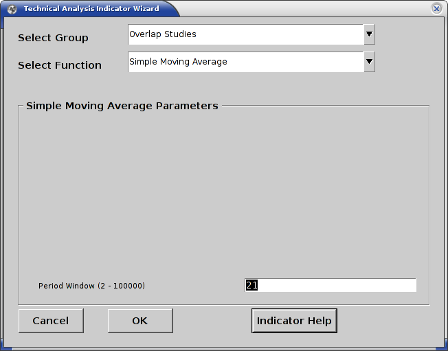
Once you do this, the simple moving average has been calculated and added to the data in the tab under the column SMA(21) as shown. 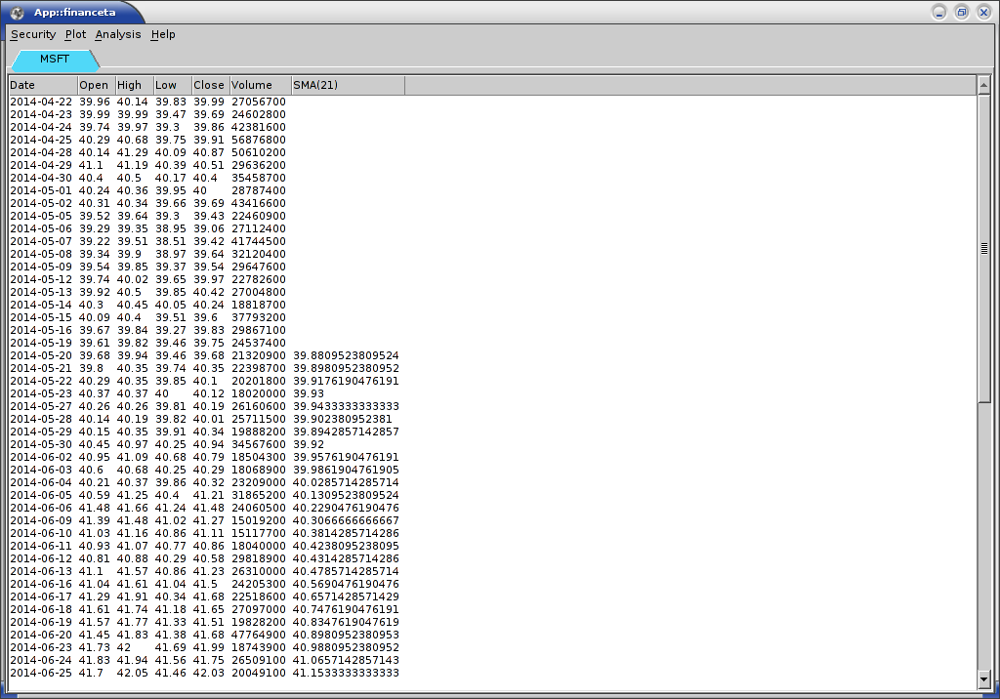
You can also see that the plot window has updated with the moving average line as shown. 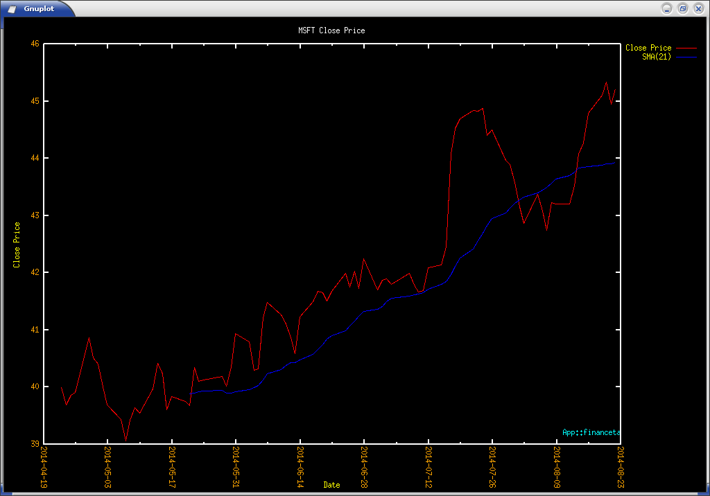
Similarly one can add various indicators to the selected security tab.
Let us move on to understanding the indicators in the next chapter.